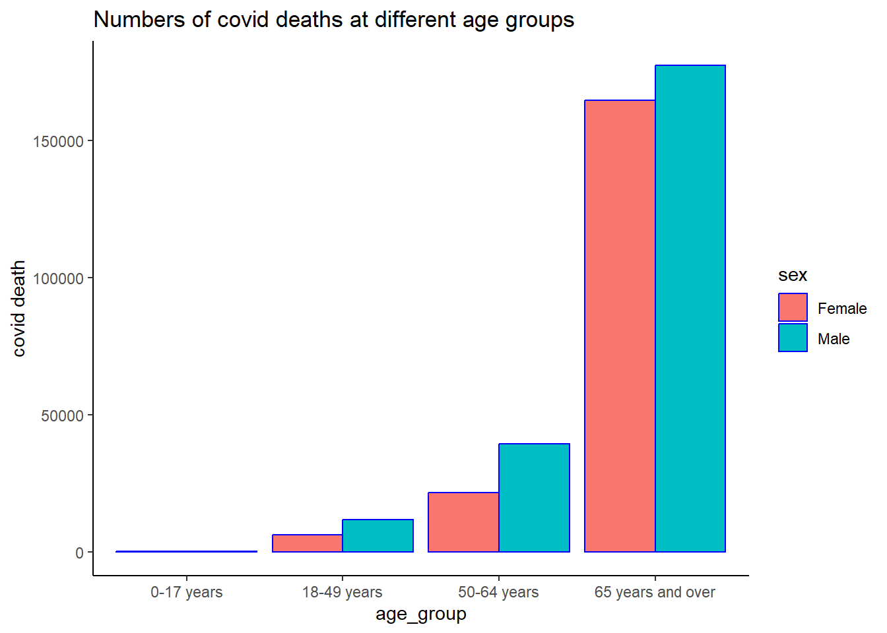
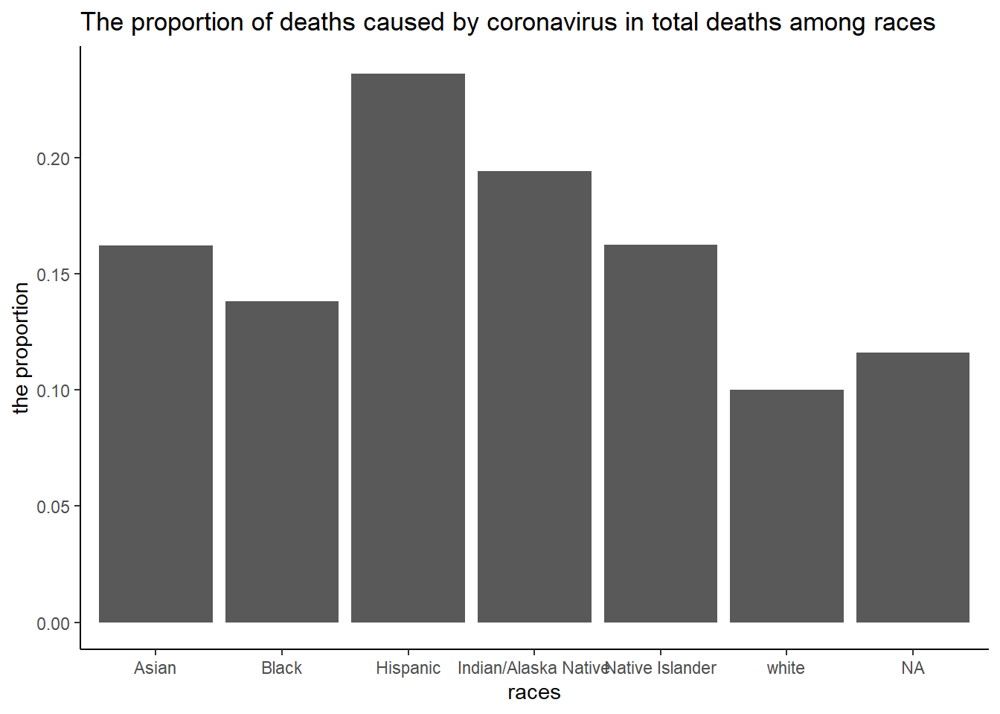

This data, from NCHS, shows provisional death counts for the US. These data are obtained from the CDC website, data.CDC.org. Within, you can find COVID-19-related deaths separated by education, age, sex, and race. Data was collected as early as January 1st, 2020 and continued until January 30th, 2021. The data was last updated February 3rd, 2021.
# Imports the raw data set. The original data set is a CSV file.raw_data <-read_csv("data/AH_Provisional_COVID-19_Deaths_by_Educational_Attainment__Race__Sex__and_Age.csv")
Rows: 224 Columns: 9
── Column specification ────────────────────────────────────────────────────────
Delimiter: ","
chr (7): Data as of, Start Date, End Date, Education Level, Race or Hispanic...
dbl (2): COVID-19 Deaths, Total Deaths
ℹ Use `spec()` to retrieve the full column specification for this data.
ℹ Specify the column types or set `show_col_types = FALSE` to quiet this message.
# Shows the classes of the variables.glimpse(raw_data)
# Creates a new data set with the variables we would like to keep. In an effort to be # more user friendly, the variable names have been converted to all lowercase with no # spaces. Also, some variables have been converted to factor classes.new_data <- raw_data %>%# Changes the variable names and makes some factors.mutate(education_level =as.factor(`Education Level`),race_origin =as.factor(`Race or Hispanic Origin`),sex =as.factor(`Sex`),age_group =as.factor(`Age Group`),covid_deaths =`COVID-19 Deaths`,total_deaths =`Total Deaths` ) %>%# Pushes only the properly formatted variables to the new data set.select(education_level,race_origin,sex,age_group,covid_deaths,total_deaths)# Shows a summary of the variables included in the dataset.glimpse(new_data)
Rows: 224
Columns: 6
$ education_level <fct> Associate degree or some college, Associate degree or …
$ race_origin <fct> Hispanic, Hispanic, Hispanic, Hispanic, Hispanic, Hisp…
$ sex <fct> Female, Female, Female, Female, Male, Male, Male, Male…
$ age_group <fct> 0-17 years, 18-49 years, 50-64 years, 65 years and ove…
$ covid_deaths <dbl> 0, 423, 857, 1793, 0, 737, 1592, 2655, 0, 82, 176, 362…
$ total_deaths <dbl> 2, 3117, 4153, 10225, 1, 5676, 6183, 11544, 0, 591, 79…
summary(new_data)
education_level
Associate degree or some college:56
Bachelor’s degree or more :56
High school graduate/GED or less:56
Unknown :56
race_origin sex
Hispanic :32 Female:112
Non-Hispanic American Indian or Alaska Native :32 Male :112
Non-Hispanic Asian :32
Non-Hispanic Black :32
Non-Hispanic Native Hawaiian or Other Pacific Islander:32
Non-Hispanic White :32
Other/Unknown :32
age_group covid_deaths total_deaths
0-17 years :56 Min. : 0.00 Min. : 0.0
18-49 years :56 1st Qu.: 3.75 1st Qu.: 112.0
50-64 years :56 Median : 81.00 Median : 817.5
65 years and over:56 Mean : 1880.20 Mean : 15665.8
3rd Qu.: 627.00 3rd Qu.: 4997.5
Max. :76871.00 Max. :670295.0
#this section is added by Weifan
#exploration of the relationship between sex, age, and covid deaths#checking the missing datahead(new_data)
# A tibble: 6 × 6
education_level race_origin sex age_group covid…¹ total…²
<fct> <fct> <fct> <fct> <dbl> <dbl>
1 Associate degree or some college Hispanic Female 0-17 years 0 2
2 Associate degree or some college Hispanic Female 18-49 yea… 423 3117
3 Associate degree or some college Hispanic Female 50-64 yea… 857 4153
4 Associate degree or some college Hispanic Female 65 years … 1793 10225
5 Associate degree or some college Hispanic Male 0-17 years 0 1
6 Associate degree or some college Hispanic Male 18-49 yea… 737 5676
# … with abbreviated variable names ¹covid_deaths, ²total_deaths
skim(new_data)
Data summary
Name
new_data
Number of rows
224
Number of columns
6
_______________________
Column type frequency:
factor
4
numeric
2
________________________
Group variables
None
Variable type: factor
skim_variable
n_missing
complete_rate
ordered
n_unique
top_counts
education_level
0
1
FALSE
4
Ass: 56, Bac: 56, Hig: 56, Unk: 56
race_origin
0
1
FALSE
7
His: 32, Non: 32, Non: 32, Non: 32
sex
0
1
FALSE
2
Fem: 112, Mal: 112
age_group
0
1
FALSE
4
0-1: 56, 18-: 56, 50-: 56, 65 : 56
Variable type: numeric
skim_variable
n_missing
complete_rate
mean
sd
p0
p25
p50
p75
p100
hist
covid_deaths
0
1
1880.20
7654.17
0
3.75
81.0
627.0
76871
▇▁▁▁▁
total_deaths
0
1
15665.81
64240.44
0
112.00
817.5
4997.5
670295
▇▁▁▁▁
#there is no missing data, so we don't need to drop anything. Now, summarize the covid_deaths by sex and agesex_age_cov=new_data%>%select(sex,covid_deaths,age_group)%>%group_by(sex,age_group)%>%summarise(total=sum(covid_deaths))
`summarise()` has grouped output by 'sex'. You can override using the `.groups`
argument.
sex_age_cov
# A tibble: 8 × 3
# Groups: sex [2]
sex age_group total
<fct> <fct> <dbl>
1 Female 0-17 years 77
2 Female 18-49 years 6055
3 Female 50-64 years 21596
4 Female 65 years and over 164713
5 Male 0-17 years 109
6 Male 18-49 years 11739
7 Male 50-64 years 39432
8 Male 65 years and over 177443
#plottingsex_age_cov%>%ggplot(aes(x=age_group,y=total,fill=sex))+geom_bar(stat="identity",color="blue",position=position_dodge())+labs(title="Numbers of covid deaths at different age groups",y="covid death")+theme_classic()

#fitting models using sex and age separately to predict covid deaths
#using sex to predict covid deathsex_cov_model=aov(covid_deaths~sex,data=new_data)#omnibus testanova(sex_cov_model)
Analysis of Variance Table
Response: covid_deaths
Df Sum Sq Mean Sq F value Pr(>F)
sex 1 5.8767e+06 5876712 0.0999 0.7522
Residuals 222 1.3059e+10 58823673
#since there p=0.878, there is no significant difference in the numbers of covid-death between male and female#using age_group to predict covid deathage_cov_model=aov(covid_deaths~age_group,data=new_data)#omnibus testanova(age_cov_model)
Analysis of Variance Table
Response: covid_deaths
Df Sum Sq Mean Sq F value Pr(>F)
age_group 3 1.3708e+09 456946592 8.5966 2.02e-05 ***
Residuals 220 1.1694e+10 53154056
---
Signif. codes: 0 '***' 0.001 '**' 0.01 '*' 0.05 '.' 0.1 ' ' 1
#since p-value is <0.001, there is significant difference between age groups. using fisher's least significant difference to do post hoc analysislsdTest=LSD.test(age_cov_model,"age_group")lsdTest
$statistics
MSerror Df Mean CV t.value LSD
53154056 220 1880.196 387.7618 1.970806 2715.395
$parameters
test p.ajusted name.t ntr alpha
Fisher-LSD none age_group 4 0.05
$means
covid_deaths std r LCL UCL Min Max
0-17 years 3.321429 8.829923 56 -1916.7526 1923.395 0 43
18-49 years 317.750000 690.819915 56 -1602.3241 2237.824 1 4558
50-64 years 1089.785714 2101.446365 56 -830.2883 3009.860 3 10561
65 years and over 6109.928571 14412.593053 56 4189.8545 8030.003 8 76871
Q25 Q50 Q75
0-17 years 0.00 0.0 1.0
18-49 years 18.75 64.5 273.0
50-64 years 47.75 213.0 900.0
65 years and over 143.25 889.5 2775.5
$comparison
NULL
$groups
covid_deaths groups
65 years and over 6109.928571 a
50-64 years 1089.785714 b
18-49 years 317.750000 b
0-17 years 3.321429 b
attr(,"class")
[1] "group"
#according to the analysis, the the number of covid deaths in 65 years and over is significantly higher than that in other age groups
summary(new_data)
education_level
Associate degree or some college:56
Bachelor’s degree or more :56
High school graduate/GED or less:56
Unknown :56
race_origin sex
Hispanic :32 Female:112
Non-Hispanic American Indian or Alaska Native :32 Male :112
Non-Hispanic Asian :32
Non-Hispanic Black :32
Non-Hispanic Native Hawaiian or Other Pacific Islander:32
Non-Hispanic White :32
Other/Unknown :32
age_group covid_deaths total_deaths
0-17 years :56 Min. : 0.00 Min. : 0.0
18-49 years :56 1st Qu.: 3.75 1st Qu.: 112.0
50-64 years :56 Median : 81.00 Median : 817.5
65 years and over:56 Mean : 1880.20 Mean : 15665.8
3rd Qu.: 627.00 3rd Qu.: 4997.5
Max. :76871.00 Max. :670295.0
#since 25% of education level is unknown, I will not analyze this variable#exploration of the relationship between ethnicity and proportion of covid death in total death#change the lengthy level names of race variable, change the race variable to factorrace_cov=new_data%>%mutate(race_origin=case_when(race_origin=="Non-Hispanic American Indian or Alaska Native"~"Indian/Alaska Native" ,race_origin=="Non-Hispanic Asian"~"Asian", race_origin=="Non-Hispanic Black"~"Black",race_origin=="Non-Hispanic Native Hawaiian or Other Pacific Islander"~"Native Islander", race_origin=="Non-Hispanic White"~"white",race_origin=="Hispanic"~"Hispanic"))%>%mutate(race_origin=as.factor(race_origin))%>%group_by(race_origin)%>%summarise(covid_deaths1=sum(covid_deaths),total_deaths1=sum(total_deaths))%>%mutate(prop=covid_deaths1/total_deaths1)glimpse(race_cov)
#plottingrace_cov%>%ggplot(aes(x=race_origin,y=prop))+geom_col()+scale_x_discrete()+labs(x="races",y="the proportion",title="The proportion of deaths caused by coronavirus in total deaths among races")+theme_classic()

take a look at absolute value of covid death among races
race_cov2=new_data%>%mutate(race_origin=case_when(race_origin=="Non-Hispanic American Indian or Alaska Native"~"Indian/Alaska Native" ,race_origin=="Non-Hispanic Asian"~"Asian", race_origin=="Non-Hispanic Black"~"Black",race_origin=="Non-Hispanic Native Hawaiian or Other Pacific Islander"~"Native Islander", race_origin=="Non-Hispanic White"~"white",race_origin=="Hispanic"~"Hispanic"))%>%mutate(race_origin=as.factor(race_origin))%>%group_by(race_origin)%>%summarise(covid_deaths=sum(covid_deaths))#plottingrace_cov2%>%ggplot(aes(x=race_origin,y=covid_deaths))+geom_col()+scale_x_discrete()+scale_y_log10()+labs(x="races",y="covid deaths numbers",title="absolute counts of covid-related deaths among races")+theme_classic()
Absolute covid-related death population was highest in American whites, however, the proportion of Covid-associated deaths was lowest in American white.